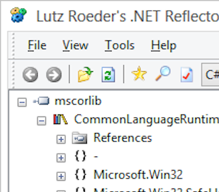
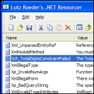
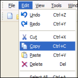
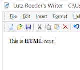

|
Tools and source code for .NET and C#:
|

|
Reflector for .NET
Reflector is the class browser, explorer, analyzer and documentation viewer for .NET.
Reflector allows to easily view, navigate, search, decompile and analyze .NET assemblies in C#, Visual Basic and IL.
reflector.zip - .NET Reflector, Add-Ins
|
|

|
Resourcer for .NET
Resourcer is an editor for .resources binaries and .resX XML file formats used with the .NET platform.
Resourcer allows editing of name/string pairs, import of bitmaps/icons and and merging of resources from different sources.
resourcer.zip - .NET Resourcer files
|
|

|
CommandBar for .NET
The CommandBar class library extends Windows Forms with classes for
CommandBar, ReBar, CoolBar, and bitmaped menu controls.
24 bit alpha channel images are supported on Windows 2000.
commandbar.zip - Library and C# source code
|
|

|
Writer for .NET
Writer is a simple WYSIWYG editor for HTML files.
The program allows you to edit HTML files using simple editing functionality like Undo, Redo, Cut, Copy, Paste, Find, Replace.
Writer also supports text layout and formatting, hyperlink editing and insertion of dates and pictures.
writer.zip - Executable and C# source code
|

|
Mapack for .NET
Mapack is a .NET class library for basic linear algebra computations.
It supports Norm1, Norm2, Frobenius Norm, Determinant,
Infinity Norm, Rank, Condition, Trace, Cholesky, LU, QR, single value decomposition,
least squares solver and eigenproblems.
mapack.zip - Library and C# source code
|
Disclaimer: The software and source code on this website is provided "AS IS" with no warranties of any kind.
The entire risk arising out of the use or performance of the software and source code is with you.
|